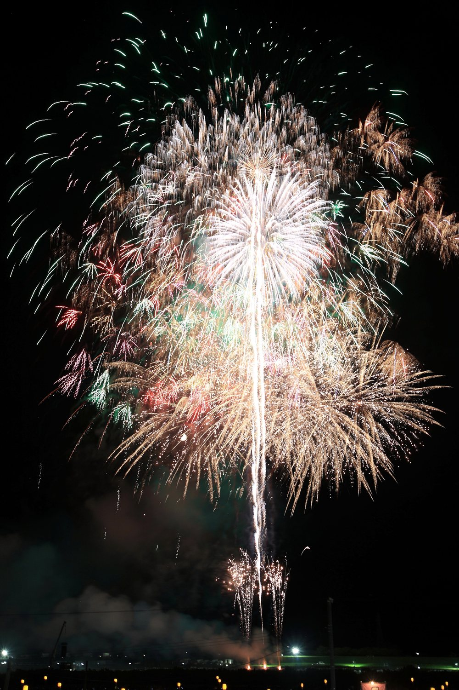
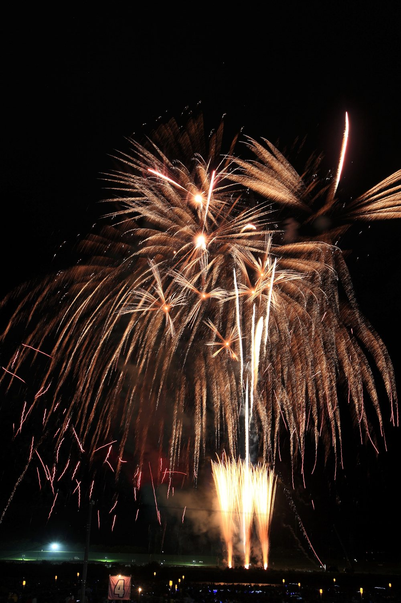
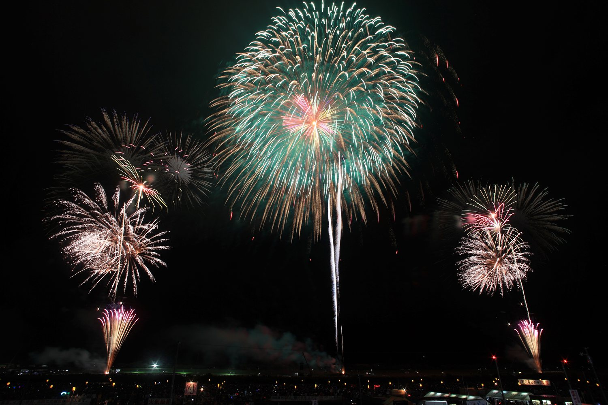
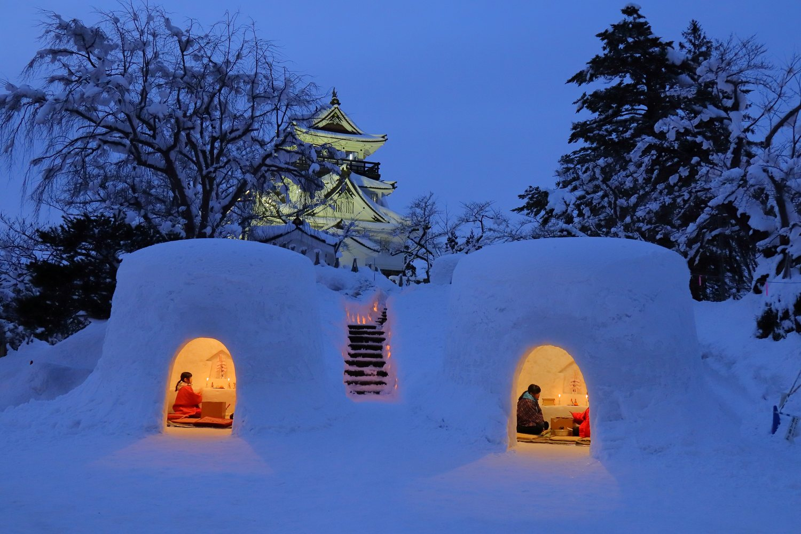
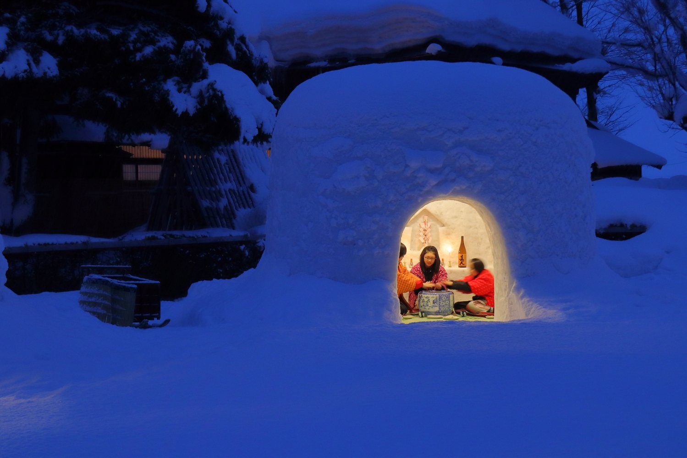
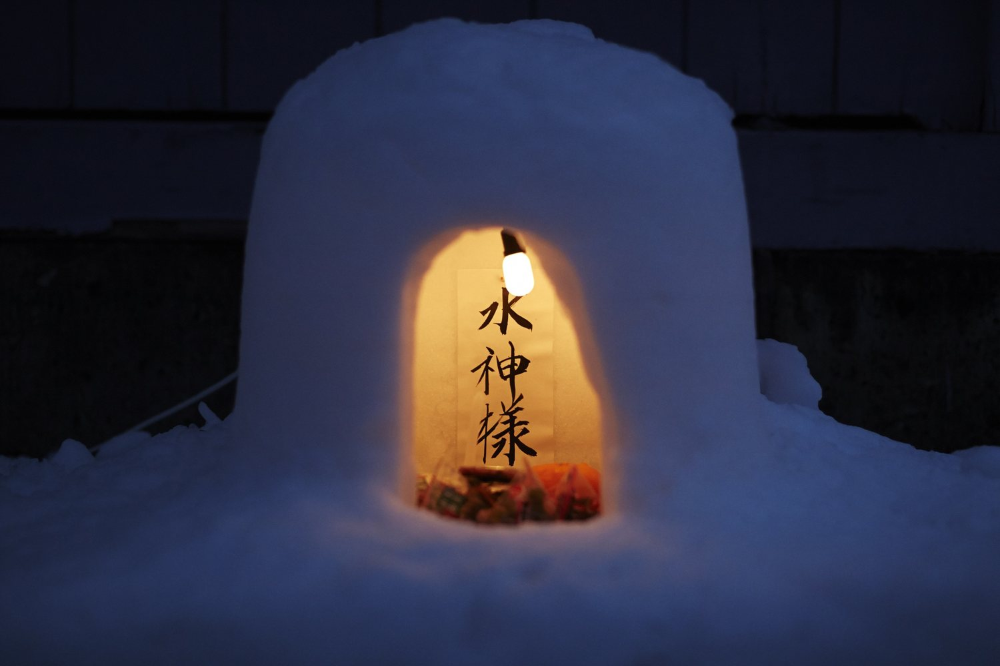

Omagari Fireworks
Officially the National Fireworks Competition, this is where Japan's top pyrotechnicians go to be judged by their peers — started in 1910, and widely considered the most prestigious fireworks competition in the country. About 18,000 shells go up over roughly four hours, including daytime shells timed to the sound of their burst rather than their light.
The display is held on the Omono River at Omagari, in Daisen City — a stop on the Akita Shinkansen, and not far from Kakunodate.



Yokote Kamakura
A 450-year-old midwinter tradition: snow is piled into dome-shaped huts called kamakura, each with a small shrine to a water deity inside. Children sit inside and invite passers-by in out of the cold for a cup of warm amazake or a rice cake, lit only by candlelight.
Dozens of kamakura are built around the town, with the best-known cluster glowing on the grounds below Yokote Castle after dark.